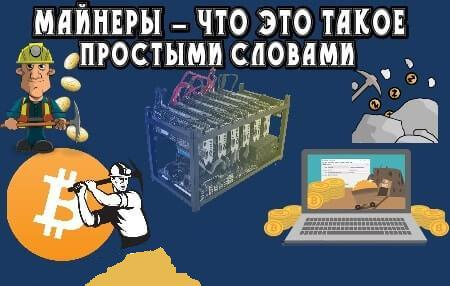
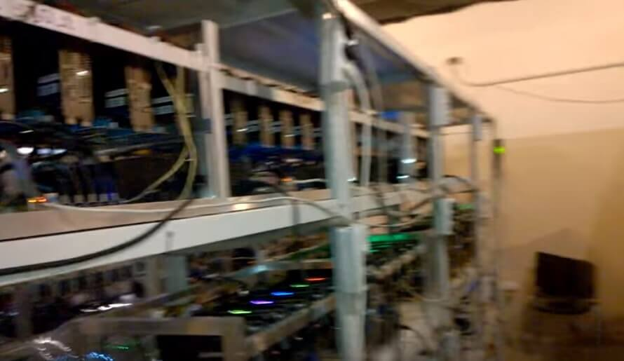

Майнеры — что это такое простыми словами

Немного предыстории про майнерство
Сегодня достаточно тяжело найти человека, который ни разу не слышал о майнинге, криптовалюте и других подобных терминах. Однако так же тяжело будет найти в толпе человека, который четко понимает, как все происходит. Так давайте же разберемся в этом под максимально понятным углом.
«Майнинг» — деятельность по поддержанию распределенной платформы. В интернете же это воспринимается, как добыча виртуальной цифровой валюты (Биткойн, Эфириум и прочие). Также подобную валюту называют криптовалютой. «Mine» обозначает в английском языке шахту.
«Криптовалюта» — разновидность цифровой валюты. Она создаётся, базируется и контролируется криптографическими методами. Самой востребованной криптовалютой на текущий момент является Биткойн и о нем поподробнее.
Биткойн
Биткойн — это совершенно новое поколение децентрализованной цифровой валюты. Она создавалась в виртуальной плоскости и работает лишь в сети интернета. Контролировать данную валюту никто из правительств, банков не может. Дело в том, что всё происходит благодаря работе миллионов компьютеров во всём мире.
Несмотря на это, Вы сможете за биткоины покупать товары, оплачивать услуги в интернете так же, как и за доллары, драхмы, евро. Главное отличие Биткойнов от всех других денежных единиц -это именно её децентрализация. Идея создания такой денежной единицы была именно в том, чтобы люди могли обмениваться монетами без какой-либо центральной власти.
На сегодняшний день одна единица Биткойна стоит 100 000 грн. И именно за такими богатствами люди и следует. Людей, которые добывают валюты в сети называют майнерами, но о них поподробнее.
Кто такие майнеры?
Из всего вышеперечисленного мы понимаем, что люди научились добывать криптовалюту в интернете и получать от этого большие деньги. Но как они это делают? Все просто.
Сейчас почти каждый человек, который имеет в пользовании персональный компьютер может скачать специальную программу, при запуске которой с течением времени вам на счет будет поступать криптовалюта, которую вы в будущем сможете обменять на обычные купюры. Таким образом вы продаете в интернете мощность всего компьютера. Пока вы просто сидите за экраном ваше железо непрерывно работает и проводит всевозможные вычисления, за которые вы получаете деньги. Только не в вашей денежной единице, а в криптовалюте.
Помимо этого, майнинговая система может быть использована и иначе. Как уже было сказано выше в этом процессе участвует огромное количество компьютеров. Они образуют некий огромный пазл, и у каждого члена системы имеется доступ лишь к одной из деталей. Поэтому если с помощью такой системы передавать различные файлы, то их будет просто не реально перехватить. Так как для этого нужно будет иметь доступ к каждому участнику цепи.

Стоит ли начать заниматься этим делом?
Подобный способ отлично подходит для тех, кто имеет мощный компьютер, но мало свободного времени для его пользования. Однако для обычных пользователей такой метод заработка будет весьма неэффективен так как за сутки непрерывной работы Вам будет начислено около 0,000625 биткойна, что как Вы понимаете не так уж и много.
Также на количество заработанных денег сильно повлияет наше место проживания. Так, например, почти идеальным местом для майнинга являются Нидерланды. Там очень дешевая электроэнергия и холодный климат. Благодаря этому Вы намного меньше денег потратите на электричество. Помимо этого, там высокоскоростной интернет, что также важно.
Чтобы достойно зарабатывать на майнинге нам потребуется несколько видеокарт хорошего качества и система охлаждения, также необходим очень добротный процессор. Подобные установки сейчас называют maining фермами. Именно на них и можно неплохо зарабатывать. Это сейчас очень популярно и, пожалуй, у каждого есть знакомый, который заинтересовавшись это темой, приобрел себе несколько таких ферм.
Лучший майнер
Но есть и те люди, кто пошел гораздо дальше, и не ограничился домашними фермами. Сегодня известны уже несколько людей, купивших большие помещения и разместившие на них несколько сотен ферм. Такая система способна зарабатывать поистине огромные деньги. Так, например, одна из самых больших ферм в мире за один день способна принести своему владельцу до 30 Биткоинов.
На наши деньги — это около 10 миллионов гривен, и это я напомню в день. Однако у этой фермы подобного масштаба затраты. Так, например, в месяц за электроэнергию владельцам придется отдать около миллиона рублей.
Итоги, выводы
В итоге мы получаем, что майнеры это те, кто:
- Имеют мощные компьютеры либо фермы.
- Продают вычислительные мощности своих видеокарт и процессоров в интернете.
- Получают в итоге криптовалюту.
- Длительное время не пользуются своими компьютерами.
Но как мы выяснили, майнинг подходит далеко не всем, и мало кто пожелает начать бизнес, который начинает приносить деньги лишь при большом стартовом капитале. Но наверняка можно сказать, что «maining»еще длительное время будет актуален. И присмотреться к такому виду заработка определенно стоит. Надеемся Вы нашли ответы на все интересующие вас вопросы.